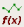
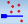

To access: Click the Open Custom Parametric Plot button in the Parametric Plot window.
The Parametric Plot creates custom graphs of the Parametric Explorer results.
The Custom Parametric Plot creates customized graphs using results from the Parametric Plot. The customization features include the following:
Selecting the dataset for the x-axis.
Plotting multiple data series on the y-axis.
Object |
Description |
|---|---|
Add Plot Adds a new graph to the window to display multiple graphs in the same window. |
|
|  | Open Score Editor. Creates a custom score for results. |
|  | Open Layout Spec Editor Creates custom specs for gauges. |
Options Sets graph display options, including Show Lines, Show Specs, and Show Markers. |
|
Edit |
Edit Plot Sets plot title, x-axis, and plot data. Plot data allows selection of multiple metrics. |
Delete Plot |